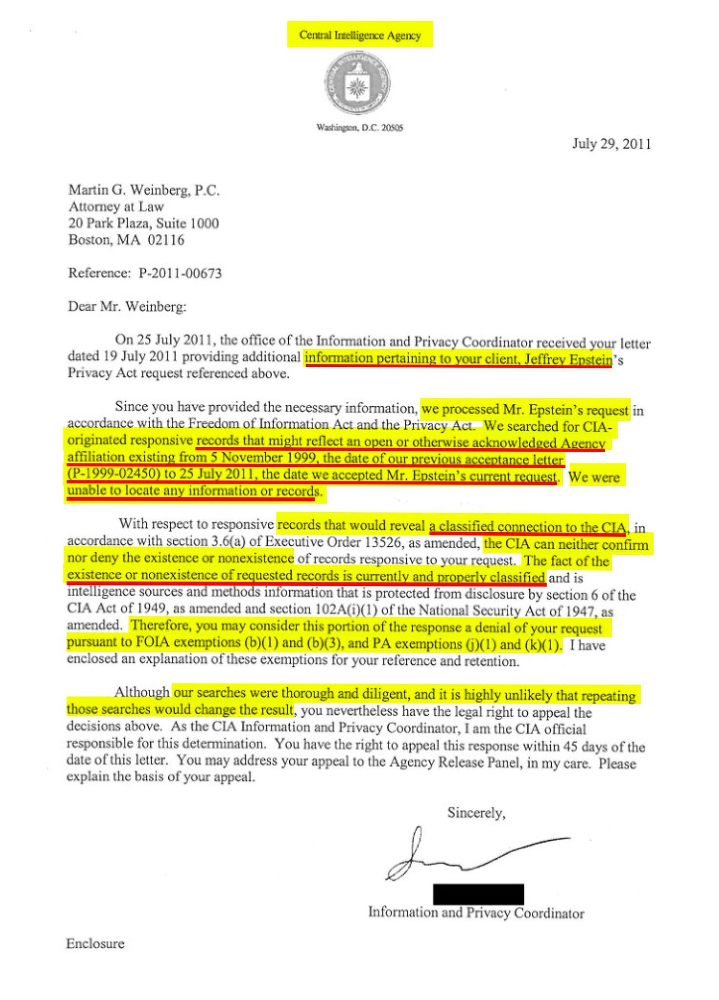

Epstein Asked the CIA If It Was Watching Him. The Agency Answered a Different Question.
Newly released CIA case files show Jeffrey Epstein went to the agency twice, openly in his own name in 1999 and through his lawyer in 2011, and the search the CIA chose to describe tells its own story.

In June 2011, three years after his Florida plea deal, Jeffrey Epstein used a formal Privacy Act request to ask the CIA whether it had been watching him. Through his Boston lawyer, Martin G. Weinberg, he sought any records showing “how, why, or when Epstein was selected to be a subject of monitoring, surveillance, observation, questioning, interrogation, investigation, and/or collection of information,” according to case files the CIA released on Sept. 18, 2026. The agency’s answer, sent from Washington on July 29, 2011, addressed something else: it had searched for records reflecting “an open or otherwise acknowledged Agency affiliation,” found none, and would “neither confirm nor deny” anything classified.
The 17 documents, released by the CIA’s Information and Privacy Coordinator to John Greenewald Jr. of The Black Vault, a public archive of government records, contain the processing files for two requests Epstein made about himself, one in 1999 and one in 2011. Greenewald asked for them on Feb. 4, 2026, three days after a post on X by commentator Mike Benz drew attention to the requests.
That post said Epstein had “anonymously” asked the CIA in 1999 for all records “that might reflect an open or otherwise acknowledged Agency affiliation” between himself and the agency. The CIA’s own files contradict both parts of that claim.
Epstein’s first letter, dated Oct. 28, 1999, was typed on his own letterhead and signed in his own name. It gave his full legal name, his date and place of birth and his citizenship, and it closed with a declaration signed under penalty of perjury. Its request was simple: “please furnish me with copies of all records about me indexed to my name,” the letter reads. He agreed to pay up to $5,000 in search fees. The letter never mentions an affiliation with the CIA.
The agency logged the case as P-1999-02450 and filed it under “INFO ON SELF.” On Nov. 15, 1999, its Office of Security reported that “no security records were located.” Epstein wrote again on April 7, 2000, complaining that more than five months had passed without an answer. The decisive search came on Feb. 19, 2002, when the Directorate of Operations, the CIA’s clandestine service, reported: “This Directorate has no information which can be identified with the Subject.” The form marks the result as a “True Negative.” Two days later, the agency told Epstein: “We were unable to identify any information or record filed under your name.”
The phrase that spread online did not come from Epstein. It is the CIA’s own wording, from its 2011 reply to his lawyer, which The Washington Post reported and Public quoted in February 2026.
The second request, filed June 28, 2011, was different in kind. Weinberg asked for records created from Jan. 1, 2000, to June 28, 2011, including any that “document monitoring, surveillance, observation, questioning, interrogation, investigation, and/or collection of information relating to Epstein,” and he asked the agency to run a cross-reference search. When the CIA asked for Epstein’s written consent, he signed a privacy waiver on July 18, 2011, on an FBI form with “FBI” crossed out and “CIA” written in by hand, the files show.
It was not an isolated inquiry. Weinberg sent similar requests to the CIA and the FBI between 2010 and 2012, and in 2014 the National Security Agency refused to confirm or deny holding intelligence material sought by another Epstein lawyer, Darren K. Indyke, the Post reported.
The CIA closed the 2011 case within a month. Its internal summary records the outcome as a “Split-Glomar”: no unclassified records of an acknowledged affiliation, and a formal refusal to say whether classified records exist. On Feb. 17, 2026, Rep. Nancy Mace, R-S.C., cited the agency’s letter in demanding that the CIA make its records on Epstein and Ghislaine Maxwell available to Congress.
The files hold one more detail. When the CIA ran its 2011 search, the 1999 case was gone. A memorandum on the closing paperwork reads: “Previous case destroyed 14 Sept 2005 per NARA destruction schedule,” a reference to the National Archives’ rules for disposing of routine records. The destruction came six months after the parents of a 14-year-old girl complained to Palm Beach police in March 2005, the complaint that began the investigation that led to Epstein’s guilty plea on June 30, 2008, according to a Justice Department review. Nothing in the files connects the two events.
The records leave two questions open. None explains why Epstein, then 46, wrote to the CIA in October 1999. And the agency’s refusal to confirm or deny a classified connection is, by design, not an answer at all.
The point
What we found: the viral version had it backward. Epstein never anonymously asked the CIA to confirm an affiliation; he asked openly, under penalty of perjury, for whatever the agency held on him, and its clandestine service found nothing it could tie to his name. The revelation is in 2011. Epstein, through his lawyer, asked whether and why he had been selected for surveillance. On the face of its own letter, the CIA answered a question he never asked, whether he had an acknowledged affiliation, and refused to say anything about a classified one.
Why it matters
Claims that Epstein had ties to an intelligence agency circulate widely, but primary records are scarce. These files are among the few documents showing what the CIA itself told Epstein, in writing, about himself. They show a man concerned enough about government attention to ask more than once, and an agency whose answer left the central question formally unresolved. Every page is now public, and readers can weigh the record for themselves.
The questions
- What prompted Epstein, at 46, to ask the CIA in October 1999 for every record it held on him?
- Why did the CIA’s 2011 reply describe a search for an acknowledged affiliation when Epstein’s lawyer had asked about surveillance?
- Why did Epstein’s lawyers send surveillance inquiries to the FBI, the CIA and the NSA between 2010 and 2014?
- If the CIA holds classified records about Epstein, will Congress insist on seeing them?
- What would the 1999 case file, destroyed in 2005, have shown about how the agency searched?
Sources
- CIA release F-2026-00889: case files for Privacy Act requests P-1999-02450 and P-2011-00673 Central Intelligence Agency (hosted by The Black Vault)
- Executive Summary of Report: Investigation into the U.S. Attorney’s Office for the Southern District of Florida’s Resolution of Its 2006–2008 Federal Criminal Investigation of Jeffrey Epstein U.S. Department of Justice, Office of Professional Responsibility
- Epstein’s lawyers sought records of any CIA affiliation and NSA files The Washington Post (Maegan Vazquez), republished by Jewish World Review
- EXCLUSIVE: CIA Must Reveal What It Knows About Epstein, Says Congresswoman Public (Michael Shellenberger)
- Rep. Nancy Mace Demands CIA Disclosure On Jeffrey Epstein, Ghislaine Maxwell Connections Office of Rep. Nancy Mace